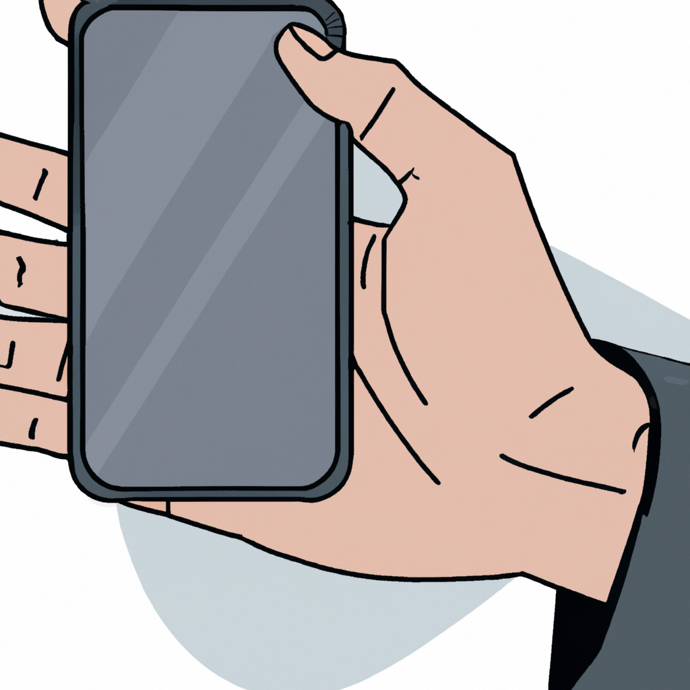

Published on invisphones.com
In a world where smartphones have become an indispensable part of our lives, a groundbreaking innovation has emerged that promises to change the way we interact with these devices. Dubbed the "invisible smartphone," this cutting-edge technology allows users to keep their phone with them at all times without the hassle of actually seeing or holding it.
The invisible smartphone is the brainchild of a team of researchers and engineers from a startup named InvisTech. The company has developed a proprietary material that can be used to make the casing of smartphones, rendering them nearly invisible to the naked eye. This material, which the company calls "InvisiGlass," has a unique ability to bend and manipulate light, causing the device to blend seamlessly with its surroundings.
While the concept of an invisible smartphone may sound like something out of a science fiction movie, InvisTech's creation is very much grounded in reality. The company has spent years researching and developing InvisiGlass, and they believe that their invention has the potential to revolutionize the smartphone market.
Of course, the idea of an invisible smartphone raises several concerns. The most obvious is the potential for users to lose their phones, given that they are nearly impossible to see. InvisTech has anticipated this issue and has included a built-in tracking system in their devices. This allows users to locate their phones using a companion app, which will emit an audible alert to help them find the device.
Another concern is the usability of the phone. Since the device is nearly invisible, users may have difficulty locating buttons or other features. InvisTech has addressed this by incorporating a voice-activated virtual assistant into their phones. Users can simply speak commands to their device, which will respond and carry out the desired action.
While the invisible smartphone is still in its early stages, it has already generated significant buzz in the tech world. Some industry experts predict that this new technology could change the way we use and think about our smartphones, while others remain skeptical. One thing is for certain: the invisible smartphone will be a product to watch in the coming years.